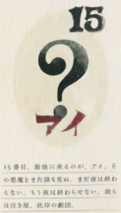

| 设定 | 简述 | 实例 |
|---|---|---|
| 魔法少女 | 处于青春期的少女向“孵化者”签订契约，实现一个愿望后所成为的存在 | 晓美焰，巴麻美，沙耶香，佐仓杏子，鹿目圆 |
| 魔女 | 在城市中构造魔女空间，能够役使使魔，死亡时化为悲叹之种 | 蓓蓓，人鱼魔女，胡桃夹子魔女，魔女之夜 |
| 使魔 | 通常，使魔是魔女意志的体现，它们服从魔女。但不知为何伪街的孩子们对自己的魔女如此不屑？ | 伪街的孩子 |
| 孵化者 | 来自宇宙的机械智能，来到地球的目的是培养魔法少女对抗魔女，为少女带来福音，嗯，表面上是这样 | 丘比 |
| 圆环之理 | 神什么的都好。至今为止和魔女战斗的大家，相信希望的魔法少女，我不想再让她们哭泣。希望她们都能笑着到最后。任何妨碍这些的法则，我会打破它，重写它。这就是我的祈愿，我的愿望！来！实现它吧！ | ？？？ |
| 银色之庭 | 颠覆圆环之理的新规则 | ？？？ |
BARI（No.1）
骄傲。她跨过废物（Good-for-nothing）滚落地上的头颅，英勇地说道：“如此傲慢。不可原谅。这是只属于我们的感情。”
骄傲。她跨过废物（Good-for-nothing）滚落地上的头颅，英勇地说道：“如此傲慢。不可原谅。这是只属于我们的感情。”
NEKURA（No.2）
阴沉。她偷偷摸摸地出场，讥讽废物：“如此废物。她是多么可耻。”这个孩子只遵循自身探求自由的欲望。
阴沉。她偷偷摸摸地出场，讥讽废物：“如此废物。她是多么可耻。”这个孩子只遵循自身探求自由的欲望。
USOTSUKI（No.3）
欺骗。她对废物的灵魂流下鳄鱼的眼泪：“我们可怜的废物主人。我们为您愚蠢的灵魂而自豪。”这个孩子嘲笑愚蠢之人，并成为他们的盟友。
欺骗。她对废物的灵魂流下鳄鱼的眼泪：“我们可怜的废物主人。我们为您愚蠢的灵魂而自豪。”这个孩子嘲笑愚蠢之人，并成为他们的盟友。
REIKETSU（No.4）
冷血。她被废物的头绊到，微微撅嘴：“何不将我们的废物主人切成碎片以方便随身携带？”这个孩子会遵循恶魔的命令。
冷血。她被废物的头绊到，微微撅嘴：“何不将我们的废物主人切成碎片以方便随身携带？”这个孩子会遵循恶魔的命令。
WAGAMAMA（No.5）
任性。她怒火中烧地走着，喋喋不休：“还在送葬？我不是已经哭完丧了吗？一刻都不想多呆。”这个孩子想要成为特殊的存在。
任性。她怒火中烧地走着，喋喋不休：“还在送葬？我不是已经哭完丧了吗？一刻都不想多呆。”这个孩子想要成为特殊的存在。
WARUKUCHI(No.6)
毒舌。她面带焦虑，嘴巴还是一如既往地令人讨厌：“我们的废物主人真是个小丑。”这个孩子喜欢玩弄缠着诡异事物的房子。
毒舌。她面带焦虑，嘴巴还是一如既往地令人讨厌：“我们的废物主人真是个小丑。”这个孩子喜欢玩弄缠着诡异事物的房子。
NOROMA(No.7)
糊涂。虽然无嘴，她能用视线嘲笑魔女。这个孩子是最称职的士兵，适当地满足魔女其他的愿望。
糊涂。虽然无嘴，她能用视线嘲笑魔女。这个孩子是最称职的士兵，适当地满足魔女其他的愿望。
YAKIMOCHI(No.8)
嫉妒。她痴迷地仰望天空：”我想准备一个盒子，将那发光之物永远禁锢在内。“这个孩子是色彩的集合体。她并不属于天堂。
嫉妒。她痴迷地仰望天空：”我想准备一个盒子，将那发光之物永远禁锢在内。“这个孩子是色彩的集合体。她并不属于天堂。
NAMAKE(No.9)
惰怠。她打着哈欠说道：”我真的必须参加你的游戏？编织的工作量太大。“她将挡道的废物的头踢开。这个孩子在送葬时偷懒，闲暇时则在城市里无聊地闲逛。
惰怠。她打着哈欠说道：”我真的必须参加你的游戏？编织的工作量太大。“她将挡道的废物的头踢开。这个孩子在送葬时偷懒，闲暇时则在城市里无聊地闲逛。
MIE(No.10)
虚荣。她夸张地避开废物的头：“我可不想让血弄脏我的披肩。”这个孩子以揭魔女自我伤害的伤疤为乐。
虚荣。她夸张地避开废物的头：“我可不想让血弄脏我的披肩。”这个孩子以揭魔女自我伤害的伤疤为乐。
OKUBYOU(No.11)
怯懦。“如果我们终至天堂，我甚至不能斩落兔子的头。”这个孩子有能将一切事件无效化的神奇力量。
怯懦。“如果我们终至天堂，我甚至不能斩落兔子的头。”这个孩子有能将一切事件无效化的神奇力量。
MANUKE（No.12）
愚笨。她向每个人轮流讲述早前从一只鸟儿那听来的故事：“我听说了一个关于神的故事。她是漂亮而又熠熠生辉的女神。女神肯定也会回我们以爱。”这个孩子只想得到她能得到的东西。
愚笨。她向每个人轮流讲述早前从一只鸟儿那听来的故事：“我听说了一个关于神的故事。她是漂亮而又熠熠生辉的女神。女神肯定也会回我们以爱。”这个孩子只想得到她能得到的东西。
HIGAMI(No.13)
乖僻。“我们送一场奇妙的葬吧，一如我从前听说过的那样。将无数漂亮的女孩子和可爱的动物也葬了吧。”这个孩子的力量并不亚于其余的魔法少女。
乖僻。“我们送一场奇妙的葬吧，一如我从前听说过的那样。将无数漂亮的女孩子和可爱的动物也葬了吧。”这个孩子的力量并不亚于其余的魔法少女。
GANKO(No.14)
顽固。她们拒绝升上天堂，指向大地：“我们的舞台是凡人的世界。”哭丧的队伍已经集合完毕。她们动作很慢，但没关系。万事俱备，只剩下葬礼了。
顽固。她们拒绝升上天堂，指向大地：“我们的舞台是凡人的世界。”哭丧的队伍已经集合完毕。她们动作很慢，但没关系。万事俱备，只剩下葬礼了。

-？-（No.15）
爱。没人见过这个恶魔。夜晚尚未结束，夜晚永不结束。我们都是送葬者，凡世的剧团
爱。没人见过这个恶魔。夜晚尚未结束，夜晚永不结束。我们都是送葬者，凡世的剧团